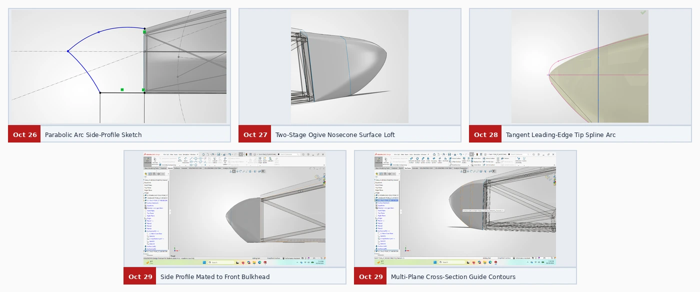

Case study 02 / Oct 26 – Oct 29, 2026
Nosecone
The custom SolidWorks nosecone transitions from a rounded tip to the front bulkhead perimeter. Its guide curves and flush joint were shaped to carry airflow smoothly onto the upper deck.
Development timeline
Oct 26
Lay out the profile
Upper and lower parabolic guide arcs established the side profile ahead of the bulkhead.
Oct 27 – Oct 28
Loft and round the tip
A two-stage ogive loft blended the tip into the rounded rectangular bulkhead outline. A tangent tip arc refined the leading edge.
Oct 29
Mate and inspect
The nosecone was mated flush to the bulkhead in side view. Five cross-sectional planes were used to inspect surface continuity.
Design figures


The custom nosecone pairs with the main bodywork baseline. The CFD page covers the earlier reference-geometry studies that informed its design.
Next case study → Sidepod